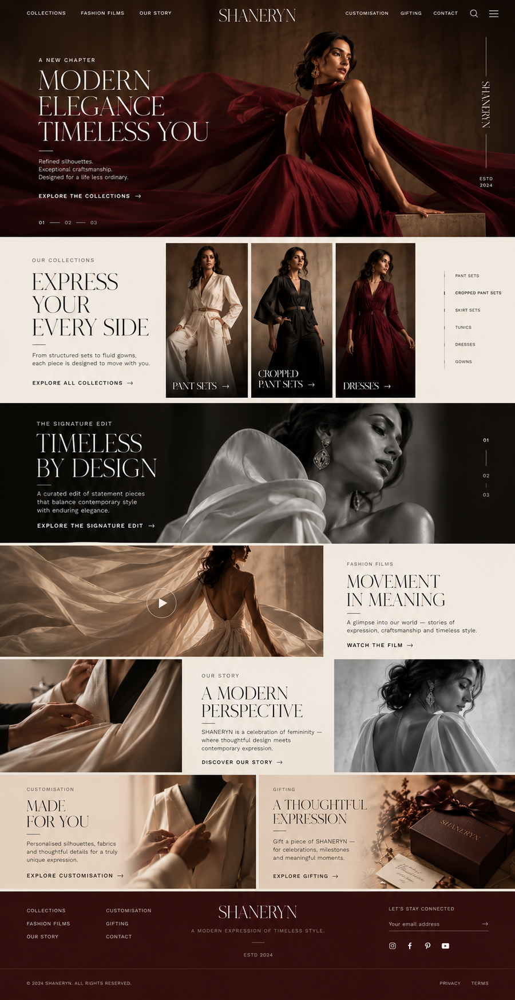

Concept 01
Editorial Couture
Rich burgundy and chocolate, cinematic fashion photography and an immersive mobile experience.
Explore Concept 1 →Website concept presentation • Homepage & Collections

Rich burgundy and chocolate, cinematic fashion photography and an immersive mobile experience.
Explore Concept 1 →Warm ivory, architectural styling, craftsmanship storytelling and a distinct editorial layout.
Explore Concept 2 →